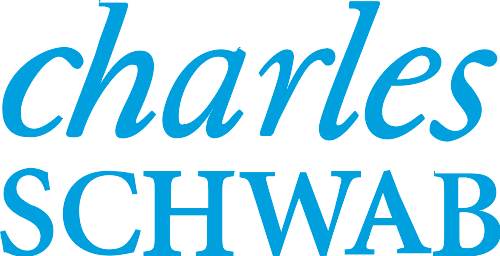
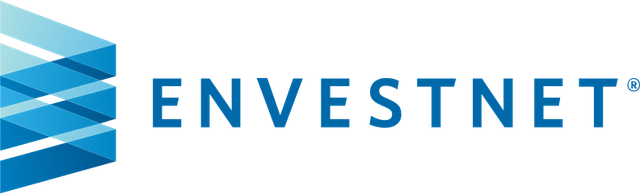

Fiduciary wealth management
Wealth management
for the moment
everything changes.
You sold the business. Your equity finally vested. You’re suddenly the one holding it all together. We coordinate investment management, tax strategy, and estate planning for people meeting a major financial turning point.
Who we serve
Wealth built through conviction and confidence.
You’re the one everyone else counts on. The one who built it, the one whose name is on it, the one doing the math at night that nobody else sees. You don’t need more information. You need less on your plate, and someone who understands exactly what this moment feels like. Start with the one that sounds like you.
The exit is on the horizon.
A pending LOI, a sale, a recapitalization, or a buyout is ahead of you, and the decisions coming matter more than any you’ve made in the last twenty years. We help structure the exit, starting years before the paperwork is signed.
Every quarter, a little more of your future lands on one stock.
You’ve meant to deal with it for six open windows in a row. Not because you lack discipline, but because unvested grants, narrow trading windows, and the fear that selling signals doubt in your own company make timing feel impossible. So your future doesn’t depend on your employer’s next earnings call.
Suddenly, you’re the one who has to know.
Maybe you lost the person who handled it all. Maybe it simply landed in your lap. Either way, the gap isn’t competence, it’s context nobody handed you. We step in as your partner through the complexity, building that context with you, in plain language, until you feel steady again.
The cost of complexity
Your wealth shouldn’t create more of a burden.
As your wealth has grown, so has the work of managing it. Somewhere along the way you became the messenger between your CPA, your attorney, and your advisor. That comes at a price.
Lost time
Every hour spent relaying, reconciling, and re-explaining between professionals is an hour that belonged to your family, your work, or your life.
Feeling stuck
When everything is a priority, nothing moves. The important calls pile up quietly behind the urgent ones, some of them for years.
Expensive mistakes
Professionals working in silos means avoidable taxes, duplicated fees, and opportunities that expired because nobody owned them.
The fix isn’t more advice. It’s coordination.
Money isn’t the destination. It’s the thing that gives you the freedom to live the life you actually want.
What we do
You set the direction. We row everything toward it.
Your CPA, your attorney, your banker: one plan, one team holding the full picture, and none of the coordination on your shoulders.
Investment Management
Evidence-based portfolios built for your goals, not this quarter’s headlines.
Financial Planning
A living plan for the decisions in front of you: exits, equity, income, education, the freedom to make a change.
Tax Planning & Coordination
In-house tax expertise working with your CPA, so April stops bringing surprises.
Estate & Legacy Planning
Your intentions, documented, coordinated with your attorney, and carried across generations.
What you can expect from us


Design
We start by listening: your goals, your family, and what you actually want this wealth to do for your life.
Build
You get one coordinated plan across investments, tax, and estate strategy, grounded in decades of Nobel-recognized research.
Protect
We meet on a rhythm that fits your life, adjust for what’s changed, and make sure nothing falls through the cracks.
The team
The people you’ll actually work with.
Frequently asked questions
The things you’re probably wondering.
How are you paid?
We’re a fee-only Registered Investment Advisor and a fiduciary, paid a percentage of the assets we manage. No commissions, no product sales, no undisclosed revenue. The planning, tax, and estate work is part of the relationship, not an add-on with its own invoice.
Do you have a minimum?
Yes. Given the time-intensive, comprehensive nature of our work, we best serve individuals with at least $1 million in investable assets.
Where does my money actually live?
At independent custodians, Charles Schwab and Fidelity, in accounts that stay in your name. We’re your advisor with limited authority to manage them, and we don’t work for the custodian. You can see everything, always.
How would you describe your investment strategy?
Evidence-based, guided by decades of objective, peer-reviewed financial research and supported by our partnership with Focus Financial. We help you manage what’s actually within your control (cost, diversification, and discipline) rather than react to headlines.
Do you handle taxes?
We do tax planning, not tax preparation. Tax strategy lives inside your financial plan year-round, led in-house by credentialed expertise, and we work directly with the CPA who files your returns so the plan and the paperwork never drift apart.
What happens after the first conversation?
We listen first: your goals, your family, what you want the money to do. If we both want to continue, we build one coordinated plan across investments, tax, and estate strategy, then meet on a rhythm that fits your life. And it all begins with a conversation we’d love the opportunity to have.
Are you the right fit for us?
We hope so, though we’re not for everyone. If you want a coordinated plan and a partner who takes financial complexity off your plate, we’d like to talk. If you’re looking for ad hoc stock tips, we’re not the right fit.
Meet with us
We’d love to meet with you.
We take on a limited number of new families each year, on purpose. It’s the only way we know to give each one the depth of attention a major financial moment deserves. If yours is approaching, we’d love the opportunity to talk with you.
Begin a conversation